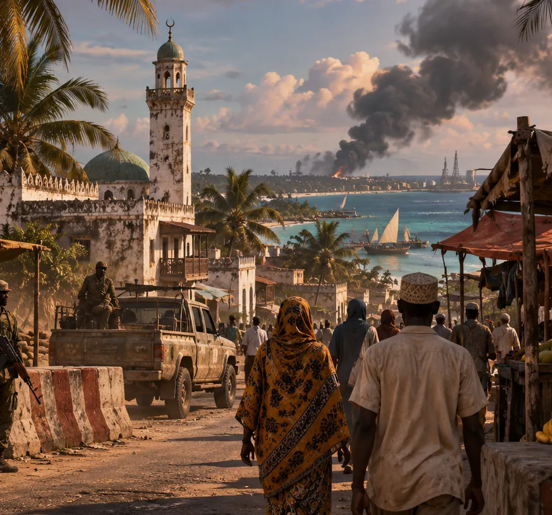
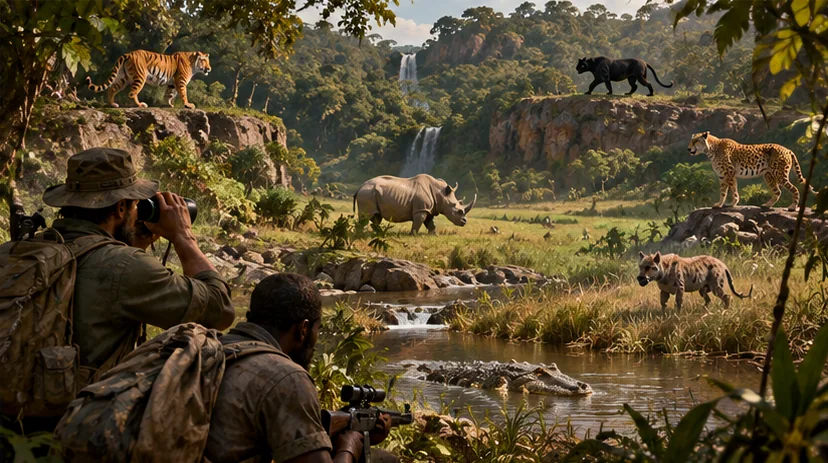

Остров не заканчивается
на линии фронта.
Этот раздел добавлен для атмосферы: тропический лес, побережье и животный мир островной Восточной Африки. Он не изменяет сюжет и не добавляет новые официальные факты в авторский лор.

Тропический лес
Укрытые листвой тропы, шум птиц и густые заросли дают пространство для экспедиций, поисков пропавших людей и мирных RP-сцен.
Морское побережье
Лагуны, приливы, рыбачьи лодки и коралловые отмели напоминают, что повседневная жизнь островитян зависит от моря.
Дикая природа
Животные и природные зоны используются здесь как визуальная атмосфера, а не как утверждённый список существ на игровом сервере.


Море и лес.

Настоящие фотографии загружаются при подключении к интернету. Без сети сайт показывает локальные иллюстрации.
Вдохновение островом,
но не перечень игровых спавнов.
Для атмосферы проекта мы используем особенности островной тропической природы: влажные леса, мангровые побережья, каменистые дорожки, речные низины, морские приливы и разнообразные птицы. Однако животные, которые действительно присутствуют в игре, зависят от конфигурации LuxRedux и серверных модов. Изображения львов, слонов и других животных не являются доказательством их появления на этой карте.

Рекомендуемые сценарии: поиски пропавшей экспедиции, заблудившиеся туристы, исследование прибрежных экосистем, незаконная вырубка, эвакуация деревни после тропического шторма. Каждый сценарий требует событий внутри игрового мира.
Где происходит действие: карта Lux ↗Хищники и крупные звери.
Опасные встречи.
Не путать с фауной реального Занзибара. В игровом мире на Lux предусмотрены встречи с опасными животными. Их размещение и численность зависят от конфигурации сервера.
 01 / ИГРОВАЯ ФАУНАТигры
01 / ИГРОВАЯ ФАУНАТигрыКрупный опасный хищник. Дорогостоящая и рискованная охотничья экспедиция.

02 / ИГРОВАЯ ФАУНАПантерыСкрытный хищник, особенно опасный в ограниченной видимости.
03 / ИГРОВАЯ ФАУНАНосорогиМассивное животное, встреча с которым требует осторожности.
Опасность на берегах водоёмов, реках и болотистых участках.
05 / ИГРОВАЯ ФАУНАГепардыБыстрые кошачьи, добавляющие разнообразие исследованиям острова.
Стая, ночные звуки и риск при передвижении вне дорог.
Законная охота, охрана природы, исследование животных и криминальные сюжеты нелегальной торговли могут сосуществовать в RP. Конкретные предметы, трофеи и цены задаются модами и серверной экономикой.